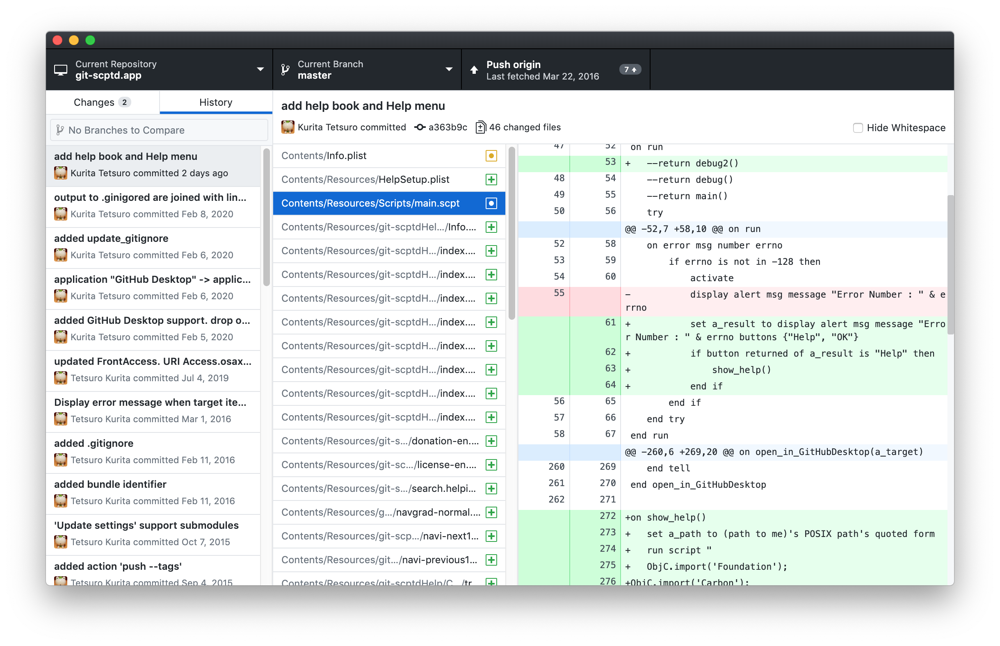

区切り線以降のコマンドは、外部ツールの起動です。
Terminal を実行するとバンドルを working directory にしたターミナルが開かれます。
レポジトリの状態を GUI で確認したいときは、GitHub Deskop をインストールしておくと良いでしょう。
git の GUI クライアントソフト の有名どころとして SourceTree, GitKraken GitUp などがありますが、いずれも "git config diff.osascript.textconv osadecompile" の設定を無視して、スクリプトファイルをバイナリファイルとして扱うので、差分を表示してくれません。
GitHub Desktop だけ、スクリプトファイルの差分を表示してくれます。
